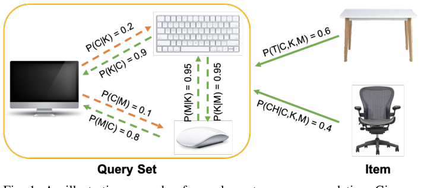
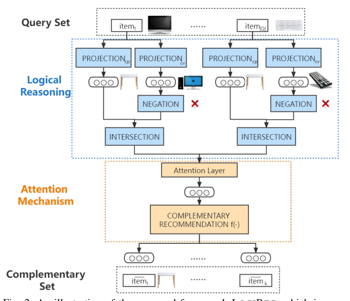

Towards High-Order Complementary Recommendation via Logical Reasoning Network (基于逻辑推理网络的高阶互补推荐)
- 会议/期刊: ICDM 2022
- 作者与机构: Longfeng Wu, Dawei Zhou (Virginia Tech)；Yao Zhou (Instacart Inc.)
- 推荐链路定位: 召回（互补品 item-to-item 召回）
- 研究方向: 图神经网络与知识图谱推荐 / 冷启动与长尾推荐
- 论文原文: 论文原文链接
- 开源代码: 开源代码仓库链接
TL;DR (1分钟核心速览)
电商“搭配购买”召回的核心是非对称性（\(P(\text{键盘}|\text{电脑})\gg P(\text{电脑}|\text{键盘})\)）与高阶性（给定电脑+键盘+鼠标，应推“办公桌”而非“椅子”），而 CF/MF/LightGCN 均基于对称度量且只处理单品查询。本文 LogiRec 将物品表示为 Beta 概率分布，用可微的投影/否定/交集逻辑算子替代人工剪枝学习有向映射，并以注意力聚合查询集合。在 6 个 Amazon 类目、70/20/10 随机划分、Hit@3/NDCG@3/MRR 协议下，Digital Music 低阶 Hit@3 由 0.222 提升至 0.567。
Background & Motivation (背景与核心矛盾)
- 主流范式: 互补推荐（CR）依赖共购/共视（co-purchase / co-view）构建商品图，用 item-based CF、矩阵分解或 LightGCN 学物品向量，再以内积/余弦找搭配品；P-Companion 等引入类目或场景辅助信息。
- 前人局限: 其一，余弦与欧氏距离对称，无法区分 \(A\to B\)与\(B\to A\)；共视数据本身又代表“可替代”语义，与共购混在一起形成标签噪声。其二，所有模型只做单品查询，无法处理集合查询的高阶意图，且 LightGCN 类方法依赖全量 user-item 图，在十万级类目上直接 OOM。
- 核心洞察 (Key Insight): 共购关系天然是有向且不可逆的一阶逻辑变换，而 Beta 分布族对投影/交集/否定三类算子封闭，且 KL 散度本身非对称，二者结合可同时解决非对称性与不确定性（如 "apple" 语义歧义）。
- 本文切入点: 用可学习逻辑算子替代“共购减共视”的人工剪枝，把 CR 统一为“查询嵌入 \(\to\)逻辑变换\(\to\) KL 最近邻检索”的端到端概率推理。

Method (核心方法设计)
1. 整体框架 (Overall Architecture)
输入为商品图 \(\mathcal{G}=(\mathcal{I},\mathcal{E}_{cp}\cup\mathcal{E}_{cv})\)与查询集合\(Q\)。每个物品\(i\)被编码为\(d\)个独立 Beta 分布（\(2d\)个参数\(\alpha_i,\beta_i\)）。M1（逻辑推理模块）用投影算子把查询嵌入映射到目标空间，并以否定、交集组合剔除共视噪声，实现有向的非对称映射；M2（注意力模块）对\(Q\)内各物品的 Beta 参数做 softmax 加权求和，得到集合级嵌入；最后由 MLP 输出预测分布，与真实互补品的 Beta 嵌入计算 KL 散度，训练时用负采样 + margin 损失，推理时按 KL 最小检索 Top-\(k\)。
flowchart TD
A["查询集合 Q = {电脑, 键盘, 鼠标}"] --> B["Beta 概率嵌入 + 注意力聚合 (M2)"]
B --> C["逻辑算子: 投影 / 交集 / 否定 (M1)"]
C --> D["按 KL 散度检索 Top-k 互补品"]
2. 关键设计拆解 (Key Designs)
- Beta 概率嵌入 + 非对称 KL 度量：对称内积无法表达方向性。将物品表示为 \(\mathrm{Beta}(\alpha_i,\beta_i)\)，映射由 MLP 学习\(f(\theta_{Q})=\theta_{i}\)，匹配度用\(D_{KL}\big(\theta_{i}\,\|\,\hat{\theta}_{i}\big)\)度量——KL 天然不满足对称性，直接编码了\(P(i|q)\neq P(q|i)\)；Beta 的方差还刻画了语义歧义带来的不确定性。
- 可微逻辑算子替代人工剪枝：作者指出 \(E_{cp}\cap E_{cv}\)中的共视重叠是标签噪声，理想标签是\(E_{cp}-E_{cv}\)。本文不改数据而改算子：否定算子取\(\alpha_{q}=1/\alpha_{i},\ \beta_{q}=1/\beta_{i}\)表达“排除共视项”，交集算子以\(\alpha_{i}=\sum_{j}w_{j}\alpha_{q_{j}},\ \beta_{i}=\sum_{j}w_{j}\beta_{q_{j}}\)（\(w_j\) 为 softmax 权重）实现多条件合取，使剪枝在嵌入空间端到端可学。
- 高阶注意力与负采样训练：单查询时 \(|Q|=1\)，注意力退化为恒等映射，故需专门训练高阶分支。集合表示取\(w_{j}=\mathrm{softmax}\big(\theta_{j}\big)\)、\(\alpha_{Q}=\sum_{j=1}^{|Q|}w_{j}\alpha_{j}\)，让模型自动判别“哪个查询物更能揭示意图”。总损失为带 margin\(\gamma\) 的负采样 KL 排序损失： $\(\mathcal{L}=-\log\sigma\big(\gamma-D_{KL}(\theta_{i}\|\hat{\theta})\big)-\sum_{j=1}^{m}\tfrac{1}{m}\log\sigma\big(D_{KL}(\theta_{i'_{j}}\|\hat{\theta})-\gamma\big)\)$ 其中 \(m=128\)为均匀负样本数、\(\gamma=60\)、嵌入维度\(k=400\)；训练仅需物品对，无需 user-item 图，这正是其在十万级类目上不 OOM 的原因。推理为对全库逐一算 KL，复杂度\(O(|\mathcal{I}|d)\)，难以直接上 ANN 索引。
Experimental Setup & Evaluation Protocol (实验设置与评估协议)
- 数据集与预处理: Amazon 六个一级类目，边由共购/共视共现构造，未做 k-core 过滤。
| 数据集 | #Items | \(\lvert E_{cp}\rvert\) | \(\lvert E_{cv}\rvert\) | 密度 |
|---|---|---|---|---|
| Gift Cards | 3.9K | 20.9K | 33.4K | 3.56e-3 |
| Digital Music | 91.4K | 94.6K | 98.1K | 2.31e-5 |
| Amazon Fashion | 421.5K | 272.4K | 316.9K | 3.32e-6 |
| Video Games | 116.4K | 773.5K | 763.5K | 1.13e-4 |
| Pet Supplies | 324.5K | 981.3K | 2.03M | 2.86e-5 |
| Office Products | 657.8K | 2.42M | 1.85M | 9.87e-6 |
- 数据划分与防穿越 (Splitting Strategy): 三元组 \((h,r,t)\)按\(70\%/20\%/10\%\)随机比例划分，非时间切分。高阶样本由规则合成：若\(i_1\to i_3\)、\(i_2\to i_3\)且\(i_2\to i_1\)，则生成\((i_1,i_2)\to i_3\)。
- 排名评测协议 (Ranking Protocol): 报告 Hit@3 / NDCG@3 / MRR；论文未披露候选集规模与评测负采样方式（未声明 Full-Ranking），属协议透明度缺口。
- 对比基线与超参设置: CF、MF、LightGCN、Knowledge-Aware（序列+评论上下文）；变体 LogiRec-Low / High / Hybrid。\(k=400\)、\(m=128\)、\(\gamma=60\)，未做显著性检验。
Key Experimental Results (实验关键数据)
1. 主实验对比 (Main Results)
低阶互补推荐（单品查询）：
| 方法 | Gift Cards (H/N/M) | Digital Music (H/N/M) | Amazon Fashion (H/N/M) |
|---|---|---|---|
| CF | 0.009/0.005/0.024 | 0.096/0.061/0.074 | 0.062/0.035/0.032 |
| MF | 0.011/0.006/0.024 | 0.075/0.060/0.064 | 0.016/0.012/0.013 |
| Knowledge-Aware | 0.009/0.004/0.025 | 0.075/0.053/0.062 | 0.039/0.023/0.024 |
| LightGCN | 0.119/0.047/0.074 | 0.222/0.213/0.222 | OOME |
| LogiRec-Hybrid | 0.155/0.110/0.149 | 0.567/0.484/0.493 | 0.278/0.226/0.245 |
| Improv. (vs best) | +30.3%/+134%/+101% | +155%/+127%/+122% | +348%/+546%/+666% |
高阶互补推荐（集合查询）：
| 方法 | Gift Cards | Digital Music | Amazon Fashion |
|---|---|---|---|
| CF | 0.029/0.015/0.052 | 0.086/0.047/0.088 | 0.080/0.042/0.058 |
| Knowledge-Aware | 0.042/0.024/0.061 | 0.097/0.067/0.091 | 0.027/0.020/0.031 |
| LightGCN | 0.054/0.037/0.079 | 0.067/0.046/0.053 | OOME |
| LogiRec-Low | 0.060/0.045/0.068 | 0.335/0.260/0.291 | 0.047/0.035/0.047 |
| LogiRec-Hybrid | 0.256/0.184/0.241 | 0.641/0.485/0.495 | 0.470/0.353/0.387 |
2. 消融实验 (Ablation Study)
| 设置 | 场景 | Low | High | Hybrid |
|---|---|---|---|---|
| Gift Cards | 低阶 Hit@3 | 0.121 | 0.027 | 0.155 |
| Digital Music | 低阶 Hit@3 | 0.550 | 0.160 | 0.567 |
| Amazon Fashion | 低阶 Hit@3 | 0.182 | 0.116 | 0.278 |
| Gift Cards | 高阶 Hit@3 | 0.060 | 0.192 | 0.256 |
| Digital Music | 高阶 Hit@3 | 0.335 | 0.566 | 0.641 |
| Pet Supplies | 高阶 Hit@3 | 0.007 | 0.060 | 0.099 |
3. 关键实验发现 (Key Findings)
- 非对称性是主要增益源：CF/MF/LightGCN 在图3 的“非对称度-性能”平面上被判定为对称，且位于左下方；LogiRec 位于右上角。Gift Cards 上仅 M1（LogiRec-Low）就把 Hit@3 从 LightGCN 的 0.119 抬到 0.121、MRR 从 0.074 抬到 0.129，说明 KL + 有向算子对方向性建模有效，而不仅是模型容量。
- 集合级注意力是高阶场景的决定因素：Digital Music 高阶 Hit@3 从 Low 的 0.335 升至 High 的 0.566（+69%），再经联合训练到 0.641；而高阶分支在低阶场景几乎失效（Video Games / Pet Supplies / Office 三项 Hit@3 均仅 0.001），因 \(|Q|=1\) 时注意力退化为恒等。
- 去 user-item 图带来可扩展性红利：LightGCN 在 Fashion/Video Games/Pet/Office 四个数据集全部 OOM，而仅用物品对监督的 LogiRec 在 657.8K 物品的 Office Products 上仍可训练，并将高阶 Hit@3 从 CF 的 0.032 提升到 0.038、NDCG@3 从 0.017 提升到 0.027。
Highlights & Limitations (亮点、对比与审稿批判)
- 与代表作对比 (vs. Prior Work): 相比 P-Companion（需类目层级辅助信息，仅低阶）和 Knowledge-Aware（需用户评论/购买序列，低阶、对称双嵌入），LogiRec 仅用共购/共视对即可端到端训练并支持集合查询；相比 BetaE（用于 KG 逻辑查询），本文把逻辑算子从“查询推理”迁移为“互补映射”，并用 Intersection/Negation 显式承担数据去噪职责。
- 可迁移亮点: 其一，用 KL 距离替代内积作为召回打分，可零成本为任意双塔引入方向性（如“因 A 而买 B”场景）；其二，把数据清洗规则（共购减共视）改写为可微算子，是处理标签噪声的通用范式。
- 审稿级局限批判: 其一，评测协议未交代候选集构造与是否 Full-Ranking，指标绝对值普遍低于 0.3，且无显著性检验，说服力受限；其二，高阶标签由确定性规则合成而非真实会话，存在规则依赖的标签噪声；其三，推理需对全库算 KL，无 ANN 支持，且缺少与 P-Companion 这一最直接竞品的实验对比。
Rating (四维评分)
- 方法创新性 (Novelty): ⭐⭐⭐⭐ （将 BetaE 逻辑算子重构为互补映射，以 KL 的非对称性 + 可微剪枝统一低/高阶 CR，思路简洁且有物理直觉）
- 评估协议与实验扎实度 (Protocol & Experiments): ⭐⭐⭐ （六类目覆盖稀疏度梯度、双场景三指标较完整，但候选集协议不透明、无显著性检验、缺关键竞品对比）
- 写作与数学规范度 (Clarity & Rigor): ⭐⭐⭐⭐ （算子定义与损失式清晰，6 页短文信息密度高；否定算子 \(\alpha=1/\alpha'\) 的推导与除零风险未讨论）
- 工业落地与复现价值 (Industrial & Practical Value): ⭐⭐⭐⭐ （代码开源、只需物品对无需用户图、可扩展至 65 万物品类目，但全库 KL 检索需自建量化/近似索引方能上线）